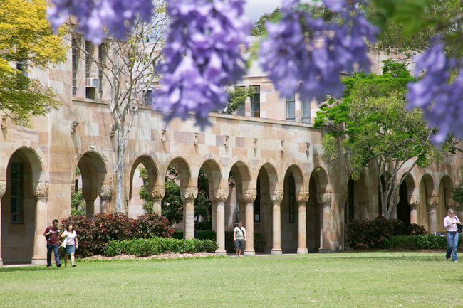

|
The main campus of the University of Queensland is located at St Lucia, 8 Km away from the Brisbane city business district.
Transportation:
To and from the airport:
A cab costs roughly $50 to the CBD or $70 to UQ St. Lucia Campus. You may ask the driver to ``use the airport link tunnel''.
An alternative is to use AirTrain which connects to the CBD from which you can take a bus.
In and out of UQ:
There is a CityCat ferry terminal at UQ as well as two major bus stop areas: UQ Chancellors Place and UQ Lakes.
All public transport including trains, ferries and buses essentially require a ``GoCard''. This may be purchased at the NewsAgent at UQ and/or vending machines.
Visit TransLink
for all public transport schedules except for AirTrain.
CityCat to and from the south bank/city:
A nice possibility for a ``self-excursion'', perhaps on the late afternoon of Tuesday, July 9, is to take the CityCat to South Bank (5 stops from UQ)
and have a stroll on South Bank and/or cross the pedestrian bridge to the Botanical Gardens.
Alternative dining options with a nice view to the Story Bridge and Kangaroo Point cliffs,
can be found by getting off the CityCat, 2 stops after South Bank, in Riverside.
To and from the workshop dinner:
The workshop dinner is at CARAVANSERAI
restaurant at 1-3 Dornoch Tce, West End.
We will jointly leave from the lobby of Women's College on Wednesday at 17:45 and take a CityCat boat to the dinner.
See maps in the workshop booklet.
Meal Options:
At Women's College:
Breakfast is complementarity for guests of the Women's College and it is served during 7:00 -- 9:00.
People not staying at Women's College may purchase breakfast for $12.
The college also offers dinner (not included in the accommodation price) for $15.
Dinner is served during 17:30 -- 19:00.
At UQ:
There are several coffee shops and eateries on campus.
Keep in mind, that things in Brisbane and especially on Campus close rather early.
Hawken Village:
Located a kilometer away from Women's College and near King's College,
Hawken Village has several eating options, a super market and a bottle shop.
Lunch will be served for the workshop participants. Lunch times are in the workshop schedule.
Internet Access:
Eduroam wireless access is available at the common areas at Women's College.
Note that the wireless reception at the rooms of Women's College is not guaranteed to be strong enough.
It is highly recommended that you verify with your home institution that Eduroam is
set-up on your laptop and/or other devices. An alternative to Eduroam is to purchase
a UQ Connect wireless access account at the reception of Women's College.
$10 gives 350Mb. This can also be purchased at the newsagent at UQ.

|